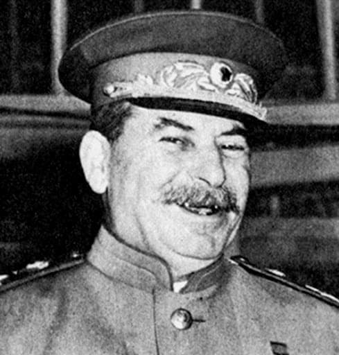
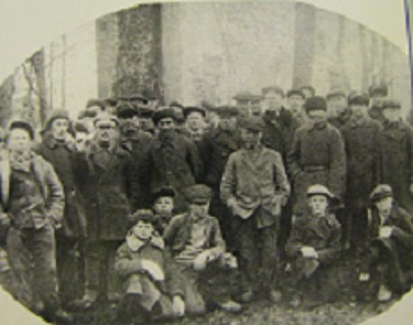

Первая мировая война, революция, октябрьский переворот, гражданская война и последующие ей годы кровавым катком прокатились по краю, лежащему в перекрестье бурных событий. Многие помещики растерзаны, усадьбы и храмы разграблены и осквернены, объявлены "кулаками" и высланы самые трудолюбивые и талантливые.
Затем голодные годы индустриализации и коллективизации. При первой возможности люди переселяются в города. 20-е - 30-е годы воспринимаются одним цветом - цветом ватника. Треухи, сапоги, платки, дома, заборы, лица и небо цвета ватника. Тяжкая, крепостная жизнь. Приведенный снимок - просто иллюстрация тех лет.
Паренек, стоящий в первом ряду (руки в брюки), будущий командир 12-ой партизанской бригады Ингинен Александр Адольфович.

На смену старому классу эксплуататоров пришел новый - партийно-административный аппарат и карающие органы.
Если старый был образованый и интеллигентный, новый интеллектом не блестал, души имел серые, работать не хотел. Хотел, чтобы его кормили, а он командовал.
Старый хозяин мог быть жадным, заносчивым или несправедливым. Но хозяйствовать его жизнь научила. Новый начальник часто приходил не из тех, кто умел работать на земле, а из тех, кто любил командовать.
"Что ж, идеи нам близки, первым лучшие куски." - спецраспределители, доппайки, жилплощадь, личный автомобиль, санаторный отдых.
Юность моей бабушки прошла в этих местах и она подхватила некоторые местные фразеологизмы.
Когда я был ребенком и ленился работать, ссылаясь на объективные трудности, она хлестала меня по попе прутиком, приговаривая: - "У Шустова в Петров день поросенок замерз".
Суть морали разьяснил мне отец позднее.
Оказывается, у них в деревне был некий активист - Шустов.
На вопрос: - От чего у тебя поросенок околел, отвечал - замерз!
Петров день - середина лета!
Кормить надо было!